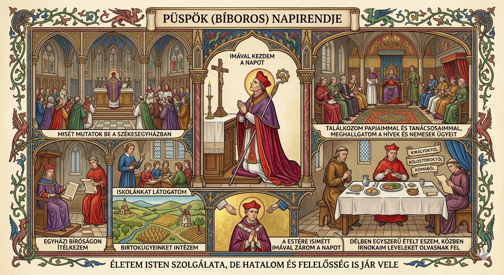

Püspök (bíboros)

Öltözékük: Miseruha, Mitra (püspöksüveg), Stóla (A nyakban viselt hosszú szalag, a papi hatalom jele). Hajnalban imával kezdem a napot, majd misét mutatok be a székesegyházban. Ezután papjaimmal és tanácsosaimmal találkozom. Meghallgatom a hívek és nemesek ügyeit. Délben egyszerű ételt eszem, közben írnokaim leveleket olvasnak fel – királyoktól, kolostoroktól vagy akár Rómából. Délután az egyházi bíróságon ítélkezem, birtokügyeinket intézem, vagy az iskolánkat látogatom. A pápát segítem tanácsaimmal, és fontos döntésekben veszek részt. Estére ismét imával zárom a napot. Életem Isten szolgálata, de hatalom és felelősség is jár vele.

A XIII. században vagyunk. Nemrég keltem fel, de nemsokára reggeli misét kell tartanom az embereknek. Ruhám nincsen sok, csak pár darab, de az is csak két barna csuhából, saruból és egy övnek használt kötélből áll. De a kereszt, amit a nyakamban hordok mindig, az már nem is számít annak szerintem, hanem a részem. Természetesen az ünnepi miseruhát nem felejthetem el. Igazából a szállásom is csak egy kis szerény ház a templom mellett a plébánia területén. Két szobából áll: az egyikben alszom és imádkozom, a másikban pedig a konyha található. A plébánia területén található még egy kis kert, ahol különböző zöldségeket termesztek. A napjaim javarészét imádkozással és kertészkedéssel töltöm. A hívekkel napi szinten szoktam foglalkozni, de néha temetésen is részt veszek. Hála a Mindenhatónak, ezt ritkán kell megtennem ebben a faluban. Sajnos sok gyónást is le kell vezényelnem a hívek körében, mivel az ördög nem alszik. Igyekszem megértő és kedves lenni a hívekkel, de félek, hogy megsértem őket, meg sajnálom, hogy ilyen sokat kell adózniuk. De a szabályokat követni kell, mint például a tized az egyháznak és a tízparancsolat. A kedvenc ünnepem a húsvét, mivelhogy a zord tél után megmutatkozik Isten szeretete, meg persze jólesik böjt után húst fogyasztani. Főbb ünnepeink közé tartozik: hamvazószerda, húsvét, nagyböjt és karácsony is. Ezt leszámítva rengeteg ünnepünk van.